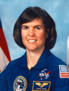

Lyndon B. Johnson Space Center
Houston, Texas 77058
|
National Aeronautics and Space Administration Lyndon B. Johnson Space Center Houston, Texas 77058 |
 |
Biographical Data |
||
Janice Voss (Ph.D.)
Astronaut (Deceased)
PERSONAL DATA: Born October 8, 1956, in South Bend, Indiana, but considered Rockford, Illinois, to be her hometown. Died on February 6, 2012, after battling cancer. Her parents, Dr. & Mrs. James R. Voss, reside in Dupont, Indiana.
EDUCATION: Graduated from Minnechaug Regional High School, Wilbraham, Massachusetts, in 1972; received a bachelor of science degree in engineering science from Purdue University in 1975, a master of science degree in electrical engineering and a doctorate in aeronautics/astronautics from the Massachusetts Institute of Technology in 1977 and 1987, respectively. From 1973 to 1975, she took correspondence courses at the University of Oklahoma. She also did some graduate work in space physics at Rice University in 1977 and 1978.
SPECIAL HONORS: NASA Space Flight Medals (1993, 1995, 1997, 2000); Zonta International Amelia Earhart Fellowship (1982); Howard Hughes Fellowship (1981); National Science Foundation Fellowship (1976).
EXPERIENCE: Dr. Voss was a co-op at NASA Johnson Space Center from 1973 to 1975. During that time, she did computer simulations in the Engineering and Development Directorate. In 1977, she returned to Johnson Space Center and worked as a crew trainer, teaching entry guidance and navigation. She completed her doctorate in 1987 and accepted a job with Orbital Sciences Corporation. Her responsibilities there included mission integration and flight operations support for an upper stage called the Transfer Orbit Stage (TOS). TOS launched the Advanced Communications Technology Satellite (ACTS) from the space shuttle in September 1993 and the Mars Observer from a Titan in Fall 1992.
Selected by NASA in January 1990, Dr. Voss became an astronaut in July 1991. Her technical assignments have included working Spacelab/Spacehab issues for the Astronaut Office Mission Development Branch and robotics issues for the Robotics Branch. From October 2004 to November 2007, she was assigned to the NASA Ames Research Center, where she served as the Science Director for the Kepler spacecraft. Kepler travels in a heliocentric, earth-trailing orbit, looking for Earth-size planets around distant stars. More information can be found at http://www.kepler.nasa.gov.
A veteran of five space flights, Dr. Voss logged more than 49 days in space, traveling 18.8 million miles in 779 Earth orbits. She served aboard STS-57 in 1993, STS-63 in 1995, STS-83 and STS-94 in 1997 and STS-99 in 2000.
SPACEFLIGHT EXPERIENCE: Dr. Voss first flew on STS-57 (June 21 to July 1, 1993). Mission highlights included retrieval of the European Retrievable Carrier (EURECA) with the shuttle’s robotic arm, a spacewalk and the first flight of the Spacehab module. She next flew on STS-63 (February 3 to February 11, 1995). Mission highlights included the rendezvous with the Russian Space Station Mir, the deployment and retrieval of Spartan 204 and the third flight of Spacehab. She also flew as payload commander on STS-83 (April 4 to April 8, 1997). The STS-83 Microgravity Science Laboratory (MSL-1) Spacelab mission was cut short because of problems with one of the shuttle’s three fuel cell power generation units. The entire crew and payload reflew on STS-94 (July 1 to July 17, 1997). The STS-94 MSL-1 Spacelab mission focused on materials and combustion science research in microgravity. Most recently, she served on STS-99 (February 11 to February 22, 2000). This was an 11-day flight, during which the international crew aboard space shuttle Endeavour worked dual shifts to support radar mapping operations. The Shuttle Radar Topography Mission mapped more than 47 million square miles of the Earth’s land surface.
MARCH 2012